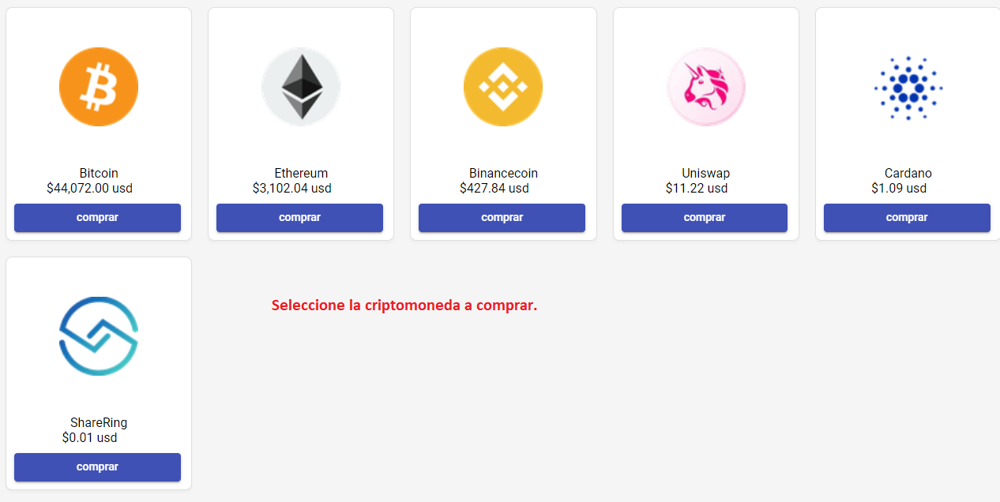

Bienvenido a la sección preguntas frecuentes:
Nombre, Apellido y Dirección: Debe ingresar tal cual figuran en el DNI.
Email: Debe ser una casilla de correo electrono al cual se conecte con frecuencia, ya que se le notificaran sus transacciones!
Contraseña: Debe ser entre 7 y 10 caracteres alfanumericos.
DNI: Debe ser el que aparece en el DNI
Banco y CBU: Aqui apareceran los bancos y CBUs agregados.
Banco: Seleccione el banco con el cual quiere operar.
CBU:Debe ingresar el codigo bancario unico(CBU) asociado a la cuenta del banco ingresado.Puede ingresar todos los CBU y bancos como desee.
Agregar: Boton que agrega el banco y CBU a la lista de bancos.
Registrar usuario: Una vez corroborados que todos los datos ingresados son correctos
, al pulsar Registrar usuario, estara su cuenta disponible para operar
En las siguientes imagenes se explica el procedimiento para realizar una compra
